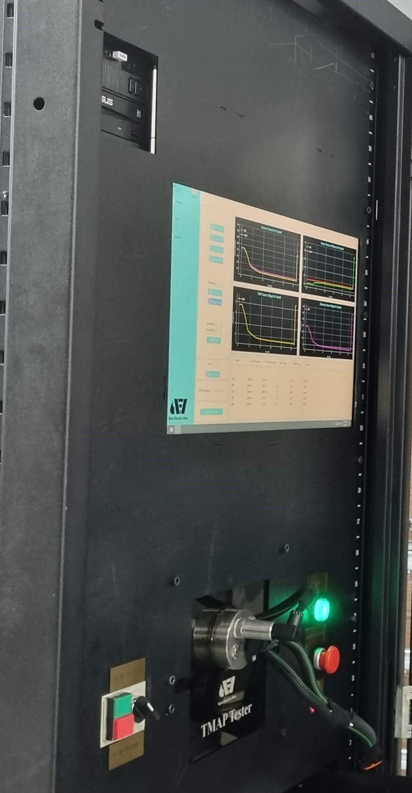

Projects
These are just some of the projects I have worked on in recent years.

TMAP Sensor Tester
This device is a TMAP sensor tester that can test the functionality of any TMAP sensor in an engine. A TMAP sensor is a device that measures the pressure and temperature of the intake air in an engine. It helps to optimize the air-fuel ratio, engine performance, fuel efficiency, and emissions control.
The device has a simple and user-friendly interface that allows you to connect the TMAP sensor to the device, select the sensor type and model, and start the testing process. The device will display the pressure and temperature readings from the sensor, as well as the expected values and the error margin. The device will also indicate if the sensor is working properly or not, and if there are any faults or defects in the sensor.
The device is a professional tool for testing the functionality of TMAP sensors and ensuring their reliability and accuracy. The device can help you diagnose and troubleshoot any problems with your TMAP sensors and improve your engine performance and efficiency.[^1^].

Smart City Project
This project is about developing a smart city system that uses IoT devices and sensors to monitor and control various aspects of the city, such as traffic, parking, lighting, waste management, air quality, and security[^2^].